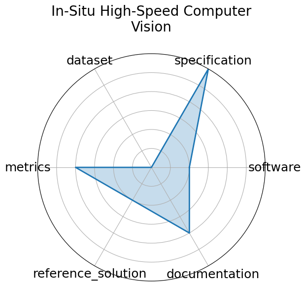

Edit: edit this entry
Date: 2023-12-05
Name: In-Situ High-Speed Computer Vision
Domain: Fusion/Plasma
Focus: Real-time image classification for in-situ plasma diagnostics
Keywords: plasma, in-situ vision, real-time ML
Task Types: Image Classification
Metrics: Accuracy, FPS
Models: CNN
Citation:
Yumou Wei, Ryan F. Forelli, Chris Hansen, Jeffrey P. Levesque, Nhan Tran, Joshua C. Agar, Giuseppe Di Guglielmo, Michael E. Mauel, and Gerald A. Navratil. Low latency optical-based mode tracking with machine learning deployed on fpgas on a tokamak. 2024. URL: https://arxiv.org/abs/2312.00128, arXiv:2312.00128, doi:https://doi.org/10.1063/5.0190354.
bibtex: ``` @misc{wei2024lowlatencyopticalbasedmode,
archiveprefix = {arXiv},
author = {Yumou Wei and Ryan F. Forelli and Chris Hansen and Jeffrey P. Levesque and Nhan Tran and Joshua C. Agar and Giuseppe Di Guglielmo and Michael E. Mauel and Gerald A. Navratil},
doi = {https://doi.org/10.1063/5.0190354},
eprint = {2312.00128},
primaryclass = {physics.plasm-ph},
title = {Low latency optical-based mode tracking with machine learning deployed on FPGAs on a tokamak},
url = {https://arxiv.org/abs/2312.00128},
year = {2024}}
```
Ratings:
Software:
Rating: 1
Reason: No public implementation or containerized setup released
Specification:
Rating: 3
Reason: No standardized I/O, latency constraint, or complete framing
Dataset:
Rating: 0
Reason: Dataset not provided or described in any formal way
Metrics:
Rating: 2
Reason: Throughput and accuracy mentioned, but not defined or benchmarked
Reference Solution:
Rating: 1
Reason: Prototype CNNs described; no code, baseline, or training details available
Documentation:
Rating: 2
Reason: Some insight via papers, but no working repo, setup, or replication path
Average Rating: 1.5
Radar Plot: 